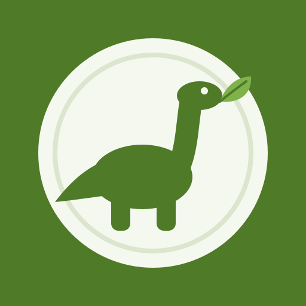

Siirry sisältöön

Vegesauruksen arkiruokia
Tietoja ei voi tallentaa tälle laitteelle, joten valinnat katoavat, kun suljet sivun. Tarkista, ettei selain ole yksityisessä tilassa.
Sovellus tarvitsee toimiakseen JavaScriptin.